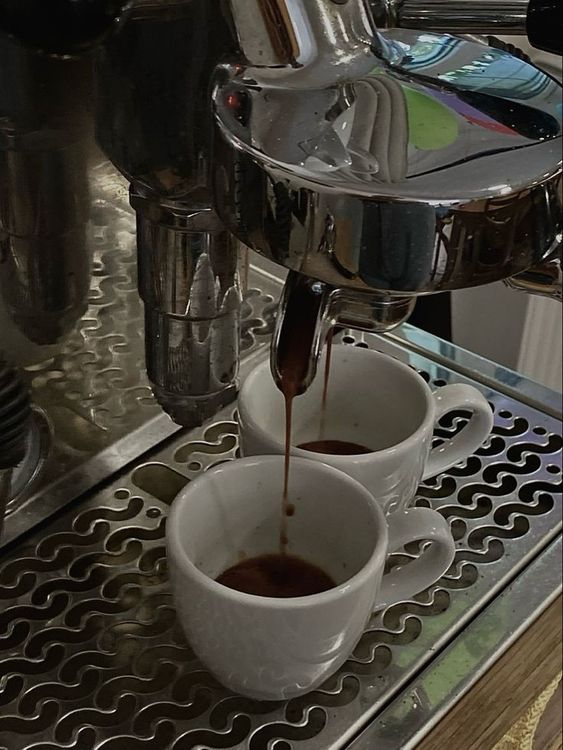

Our grains are previously selected
Source
Grain
El café tostado rubio es tostado en menos tiempo, tiene un cuerpo ligero y sabores suaves.
Nespresso compatible capsules
El café con tostado medio es balanceado con sabores agradables y enriquecidos.
Intensity
From responsible cultivation to roasting, every detail in the elaboration in an artisanal way is essential to enjoy a cup of Di Coffe coffee. And in addition to the essence of the beans, we know that the way coffee is prepared has a surprising effect on the flavor of each cup and defines its body.